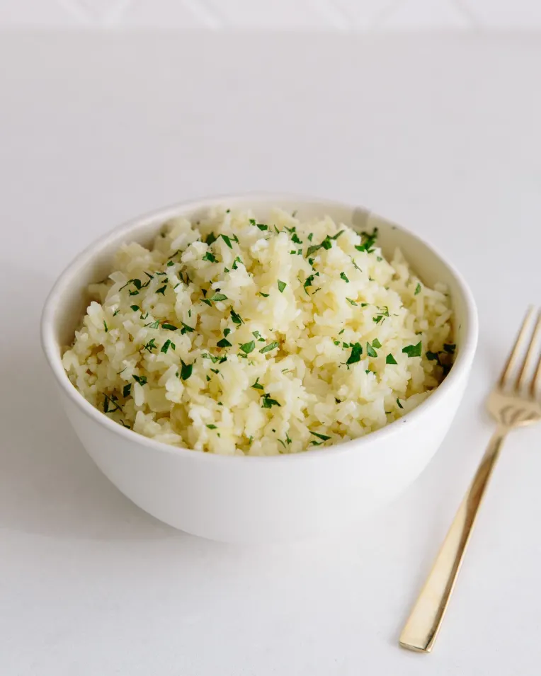

Rice Pilaf

Description
Think of rice pilaf as an upgrade to your everyday rice. It’s like rice that puts on a nice dress and some earrings — not much extra work,
but the payoff is a side dish that feels just a little bit fancy.
Ingredients
- 1 cup long-grain white rice
- 1 tbsp EVOO or butter ;)
- 1/2 yellow onion, diced
- 1 3/4 cup of chicken or vegtable broth
- 6 cups chicken broth
- 1/2 tsp salt
Steps
- Rinse the rice: Place the rice in a strainer and rinse it thoroughly under cool water. The water running through the rice will look milky at first, but will then become clearer and only lightly clouded. It's fine if there's still some haze in the water. There is no need to dry the rice before cooking; a bit of moisture on the rice is fine.
Set the strainer of rice aside while you cook the onion.
- Cook the Onion:
Warm the olive oil or butter
in the saucepan over medium heat.
Add the onion and cook until the onion is translucent and soft.
- Toast the rice: Add the rice to the pan and stir to coat with olive oil or butter.
Continue to cook, stirring often, until the tips of the rice turn translucent
and the rice smells fragrant and toasted.
- Add the broth or water and boil: Pour the broth or water and salt into the saucepan and increase the heat to medium-high.
Bring to a boil.
- Cover and cook: As soon as the water comes to a boil, reduce the heat to low and cover the pot. Cook without lifting the lid for 15 to 18 minutes.
At the end, check that the rice is tender and has absorbed all the liquid. If not, cover and cook another few minutes, adding a few tablespoons of water if needed.
- Steam the rice:
- Fluff and serve: Remove the lid and fluff the pilaf with a fork. Transfer to a serving bowl and serve.
Return to top